10 部片单 · 恐怖 / 科幻 / 惊悚 / 悬疑 / 剧情
| # | 片名 | 类型 | 评分 / 状态 |
|---|---|---|---|
| 01 | 宿敌 | 悬疑 / 惊悚（加拿大 · 多伦多 · 一个男人在电影院里认出了自己） | 7.0 / 72% / 61 |
| 02 | 龙虾 | 剧情 / 喜剧 / 奇幻 / 爱情（反乌托邦爱情寓言） | 7.6 / 88% / 82 |
| 03 | 鬼魅浮生 | 剧情 / 爱情 / 奇幻（美国 · 一个裹着床单的鬼，等了几十年） | 7.6 / 91% / 84 |
| 04 | 第一归正会 | 剧情（美国 · 一座 250 年的小教堂与一个正在塌陷的牧师） | 6.8 / 94% / 86 |
| 05 | 绿衣骑士 | 奇幻 / 冒险 / 剧情（英国 · 一个骑士答应了一斧，就必须走完一年） | 6.5 / 89% / 85 |
| 06 | X | 恐怖 / 惊悚（美国 · 1979 年得州乡下的一栋房子） | 6.4 / 94% / 80 |
| 07 | 男人 | 恐怖 / 惊悚 / 剧情（英国 · 一栋乡下房子与七个一模一样的男人） | 6.8 / 69% / 65 |
| 08 | 尸体游戏 | 喜剧 / 惊悚 / 恐怖 / 悬疑（美国 · 一场飓风夜的派对游戏） | 4.7 / 85% / 69 |
| 09 | 过往人生 | 剧情 / 爱情（美国 / 韩国 · 两个国家、两种语言、二十四年的错过） | 7.7 / 95% / 94 |
| 10 | 玛克辛 | 恐怖 / 惊悚 / 剧情（美国 · 1985 年洛杉矶，一个女人的成名之路） | 6.2 / 73% / 64 |
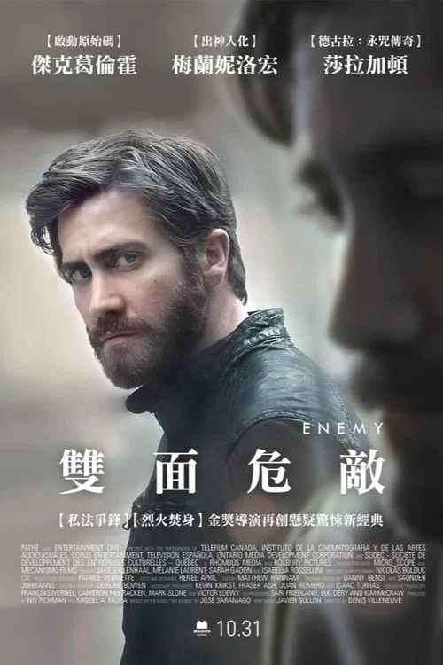
宿敌 Enemy
「「多伦多，一个男人在电影院里认出了自己。」」
剧情梗概
亚当是一名研究独裁史的历史教授，生活像一杯放凉的白开水：上课、回家、和女友海兰例行公事地看电影。同事推荐了一部小成本电影，说是「你一定会喜欢」——亚当在片里看到一个群众演员，长得和他一模一样。他先是当笑话讲给女友听，然后开始查：通讯录、邮件、地址。他找到了那个人：安东尼，一个住在汽车旅馆里的三流演员，轻浮、直接、满嘴谎言。两个长得一模一样的男人见面了，而这一次见面之后，亚当的生活开始一件一件脱轨：海兰的不信任、一通不肯说明来意的电话、一个不能说的秘密，以及城市天空里那个巨大的、谁也不提的影子。
亮点
- 改编自诺贝尔文学奖得主若泽·萨拉马戈 2002 年的小说《双生》（The Double）——维伦纽瓦把它从葡萄牙搬到了多伦多，并且刻意拍成了一部关于「城市与欲望」的寓言。
- 本片是维伦纽瓦第一部英语片，也是他进好莱坞之前最后一部小成本作者电影——拍完这部，他才有了《囚徒》《降临》《银翼杀手2049》《沙丘》。
- 全球票房约 340 万美元：一部多伦多电影节首映的小成本心理惊悚，靠口碑一路发行到三十多个国家。
- 杰克·吉伦哈尔一人分饰两角：他把亚当演成一潭死水，把安东尼演成一场火——同一张脸，两种让人不适的方式。
- 影片里反复出现在多伦多上空的「金色巨蛛」是影迷争论最多的意象——维伦纽瓦拒绝解释，只留下这个关于城市焦虑的谜。
- 全片几乎没有配乐，靠低鸣、城市噪音与安静压人：它是那种看完之后会越想越不舒服的电影。
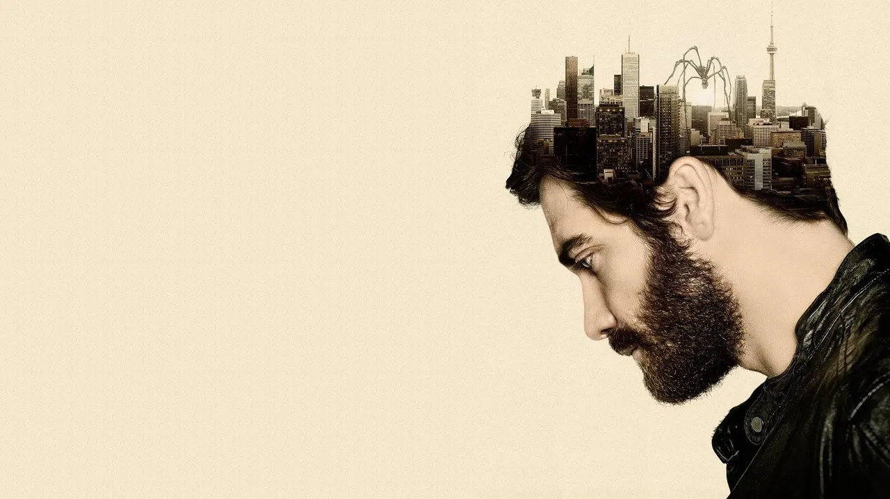
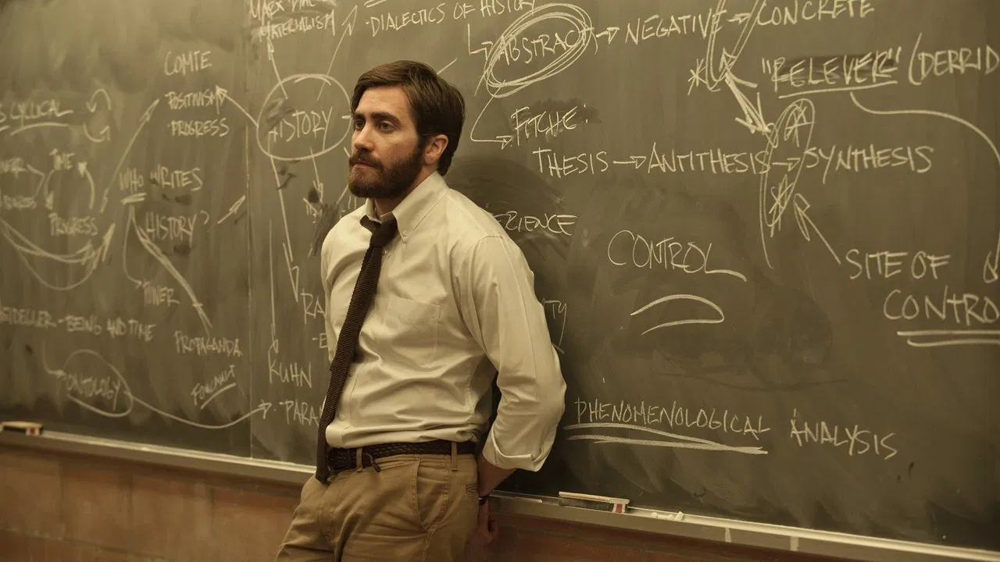
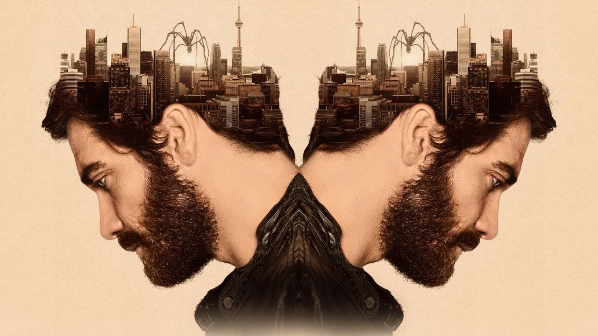
导演与主创 · 他们的历史作品

 降临
降临 银翼杀手2049
银翼杀手2049 沙丘
沙丘 囚徒
囚徒
 死亡幻觉
死亡幻觉 夜行者
夜行者 十二宫
十二宫 源代码
源代码
 无耻混蛋
无耻混蛋 惊天魔盗团
惊天魔盗团 鬼影特攻：以暴制暴
鬼影特攻：以暴制暴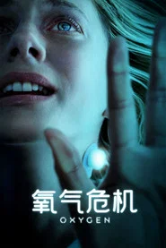
氧气危机短评（轻微剧透）
轻微剧透：全片最冷的一场戏是亚当拿着那张剧照回家，海兰看了半天说「他挺帅的」——一句话就把一段关系里的疲倦全说完了。轻微剧透：影片真正的恐怖不在结尾那间公寓里的发现，而在于你开始怀疑：整部电影可能只是一个男人如何把自己的欲望，投影成了一个怪物。结尾那个巨大的蜘蛛之影下，观众和亚当一样被留在原地，想「我刚才看的到底是什么」。这不是一部解谜电影，是一面不太友好的镜子。
为什么值得一看
想看「惊悚片能拍得多不像惊悚片」的人；能接受节奏慢、对白少、隐喻不解释的观众。R 级，建议成年观看。内地未映，流媒体与蓝光可看。看完想继续：《双重人格》原著小说（萨拉马戈）、《夜行者》（往期第 37 期推荐过，吉伦哈尔的另一张冷脸）、《天鹅》（一位导演的寓言）。
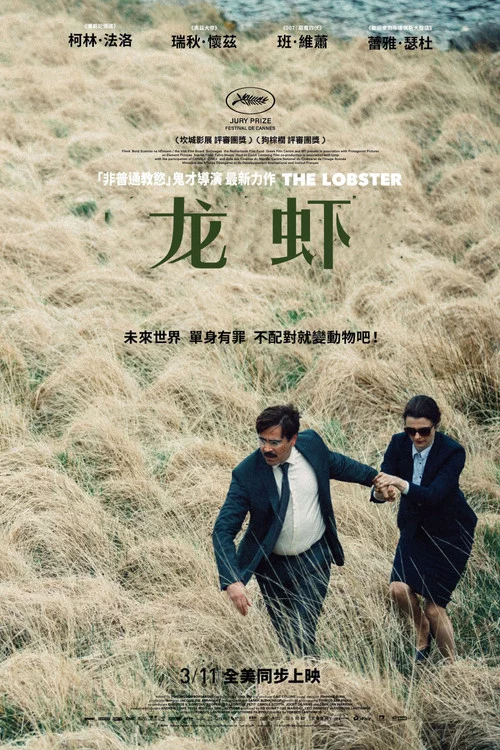
龙虾 The Lobster
「「一个人必须找到另一半，否则就会被变成动物。」」
剧情梗概
一家海边酒店，四十五天。大卫被妻子抛弃后住进来，规则写得清清楚楚：单身者必须在期限内找到一个共同点相配的伴侣，否则就要被变成一种自己选好的动物，放归森林。有人选了狗，有人选了马，有人选了驴。他开始努力：装瘸、装冷漠、装成一个流血不眨眼的冷血——直到他真的遇到了一个同样在装的女人。两个人逃进了森林里的「反叛者」营地，而那里的规矩恰恰相反：不许有两个人之间的爱情。在两个都禁止爱的世界之间，他们唯一能为自己争取的，是牺牲掉自己身上的某一样东西。
亮点
- 欧格斯·兰斯莫斯执导，欧夫卡夫斯联合编剧——本片是兰斯莫斯「异化三部曲」的中段（前有《狗牙》，后有《圣鹿之死》）。
- 第 68 届戛纳电影节主竞赛单元，拿下评审团奖——一部成本约 400 万美元的希腊导演电影，全球卖了约 1800 万美元。
- 科林·法瑞尔为演大卫增重、剃掉眉毛——他后来回忆，这是他「演过最奇怪也最有趣」的一部片子。
- 蕾切尔·薇姿与蕾雅·赛杜在片中对戏的方式，是把一场爱情拍成了审讯：每个人都先问「你流不流血」，再问「你叫什么」。
- 全片的幽默是「零度幽默」：演员说台词时面无表情，观众的笑点被冻在喉咙里——这是兰斯莫斯独有的喜剧语法。
- 影片在爱尔兰与希腊两地取景，冷灰色的酒店与森林构成了一个「制度可以长在任何地方」的世界。
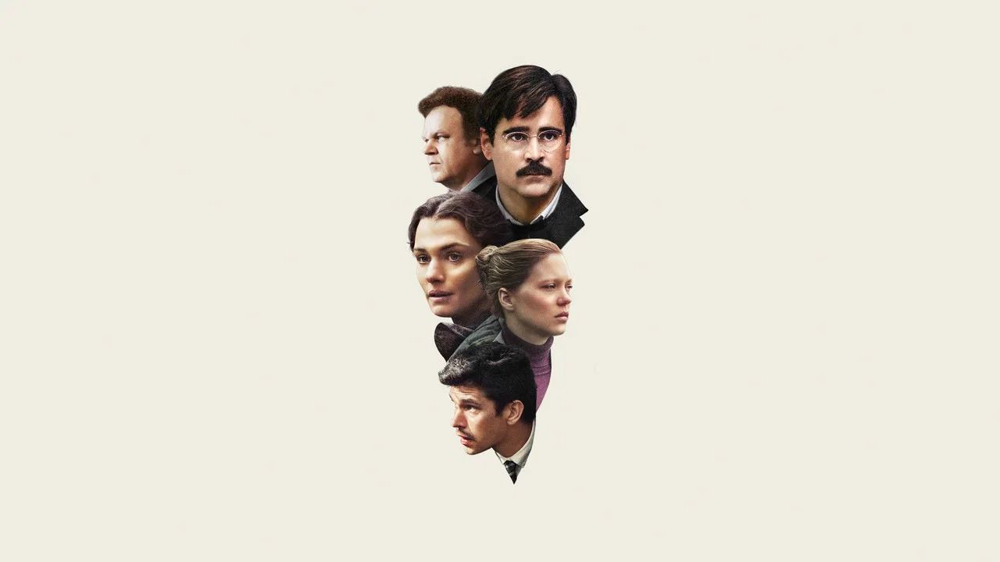
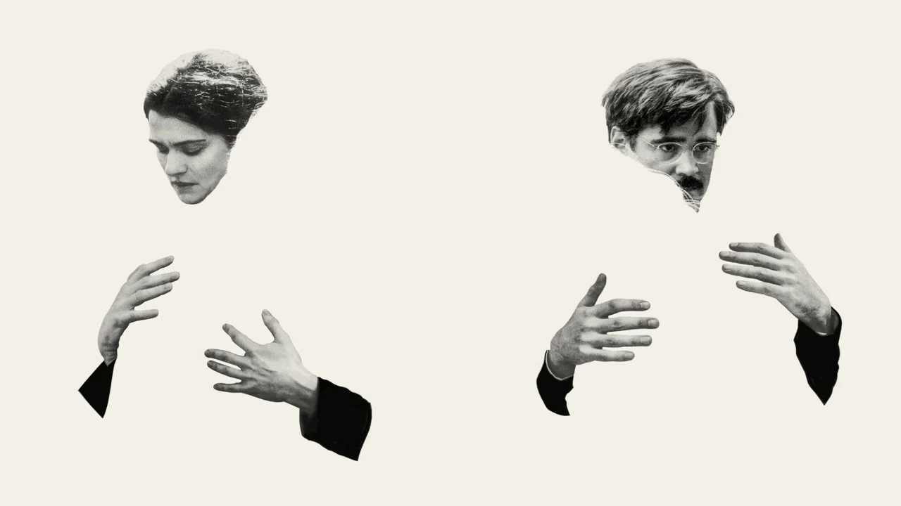
导演与主创 · 他们的历史作品

 宠儿
宠儿 可怜的东西
可怜的东西 圣鹿之死
圣鹿之死 狗牙
狗牙
 全面回忆
全面回忆 杀手没有假期
杀手没有假期 少数派报告圣鹿之死
少数派报告圣鹿之死
 木乃伊
木乃伊 康斯坦丁
康斯坦丁 木乃伊2：木乃伊归来
木乃伊2：木乃伊归来 黑寡妇
黑寡妇
 阿黛尔的生活
阿黛尔的生活 007：幽灵党
007：幽灵党 007：无暇赴死
007：无暇赴死 布达佩斯大饭店
布达佩斯大饭店短评（轻微剧透）
轻微剧透：全片最让人难受的一场戏不是变动物，是大卫为了凑一个「共同点」，在洗手间里一遍遍练习流血不眨眼。轻微剧透：兰斯莫斯最狠的设定是——酒店把爱情变成了绩效考核，森林把爱情变成了违规，而两个世界都声称自己在保护你。结尾大卫那一刀扎下去的时候，观众才意识到他「爱」的方式，正是他从两个体制里学来的方式：先判定，再处置。这是一部会让人笑到一半突然笑不出来的电影。
为什么值得一看
想看「爱情片能被拍得多不像爱情片」的人；能接受冷幽默、反乌托邦设定、以及它本质上是一部「制度如何规训情感」的电影的观众。内地未映，流媒体与蓝光可看。看完想继续：《狗牙》《圣鹿之死》（同导演，三部曲的另外两部）、《龙虾》的剧本朗读版（公开可查，值得一读）。
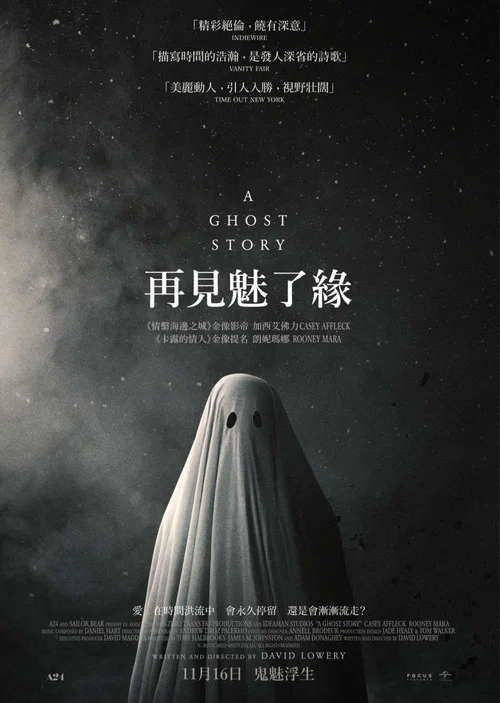
鬼魅浮生 A Ghost Story
「「我在房子里等了几十年，只为再看你一眼。」」
剧情梗概
M 和 C 是一对住在郊区小屋里的夫妻，她提过小时候总爱搬家，习惯在住过的房子里藏小纸条；他不肯搬。某天夜里，一声巨响——然后是一场车祸。C 死了。妻子给他盖上床单，从此那床单再也没掀开过：他没有走向那扇门，而是留在了这栋房子里。看她搬出去、看新房客搬进来、看房子被推土机推倒、看高楼在原址上盖起来。时间在他身上失去了意义，几十年、几百年，他都在等。直到有一天，他在一块剥落的墙漆后面，看见了自己当年没说出口的那张纸条。
亮点
- 大卫·洛维执导、编剧、剪辑——本片成本只有 10 万美元，却是他评价最高的作品。
- 影片用 1.33:1 的老电视画幅拍摄，洛维的理由是「这个人被永远困在一个盒子里，我想让画面的盒子感放大这种幽闭」——它在视觉上就告诉你：这是一部关于「等待」的电影。
- 卡西·阿弗莱克几乎全片裹在一张白床单里、只露半张脸——洛维不得不把他的动作减到最少，「剩下的是耐心、姿态与非常具体的缓慢移动」。
- 鲁妮·玛拉那段长达四分钟的吃派镜头：她坐在厨房地板上，一口一口把一个派吃完，哭声一点点涌上来——这是近年电影里最著名的「时间的镜头」之一。
- 第 43 届多维尔美国电影节一口气拿下评审团奖、影评人奖与启示奖；波士顿影评人协会把最佳剪辑给了身兼剪辑的洛维。
- 凯莎在片中有个一闪而过的客串；而威尔·奥德汉姆演的那场派对独白，是全片唯一一次把「意义」说破的地方。
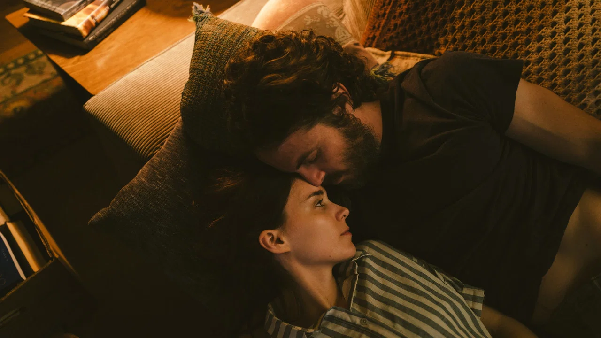
导演与主创 · 他们的历史作品
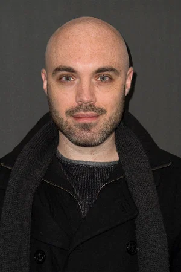
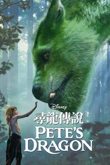
彼得的龙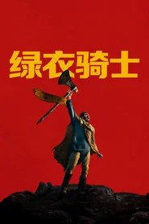
绿衣骑士 老人和枪
老人和枪
 星际穿越
星际穿越 失踪宝贝
失踪宝贝 心灵捕手
心灵捕手
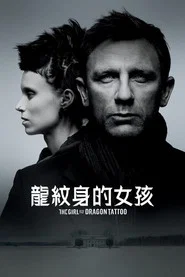
龙纹身的女孩 雄狮
雄狮 副作用
副作用 新猛鬼街
新猛鬼街短评（轻微剧透）
轻微剧透：全片最疼的一场戏是 M 一边吃派一边哭——她不是在为一个人的死哭，她是在为「一个还未来得及过完的人生」哭。轻微剧透：影片的第三幕让 C 穿过被拆掉的房子、穿过盖起来的高楼、穿过一片 19 世纪的荒地，最后回到那间空屋，坐在钢琴前，砸出了那个最初把他们惊醒的巨响——他用了几百年，才把「我爱你」这件事说完。这不是一部恐怖片，是一部关于「人如何带着遗憾继续活」的电影，只是它把这件事拍成了鬼故事。
为什么值得一看
想看「爱情片能拍得多慢、多安静、多狠」的人；能接受极简对白、固定机位、以及它本质上是一部关于「时间」的电影的观众。内地未映，流媒体与蓝光可看。看完想继续：《绿衣骑士》（本期第 5 部，同导演）、《老人和枪》（同导演，温暖得多的版本）、《维吉尼亚·伍尔夫》的《鬼屋》。
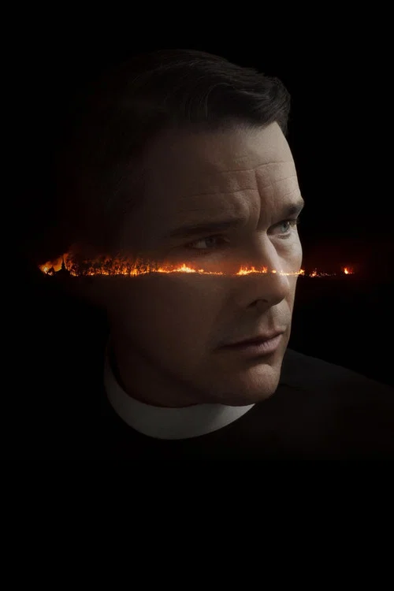
第一归正会 First Reformed
「「上帝能原谅我们吗？还是我们只能自己原谅自己？」」
剧情梗概
纽约州北部有一座 250 年历史的小教堂，叫「第一归正会」。牧师托勒每个周日只对二十来个人讲道，靠卖教堂纪念品维持收支。一天，一个怀着身孕的年轻女人玛丽安来找他：她的丈夫是一位激进的环境活动者，不让她堕胎，而她已经不想活了。托勒一边劝她，一边自己也滑进了深渊：丧子之痛、酗酒、肾病、对教会商业化的愤怒。他翻出玛丽安丈夫的日记，发现里面写着一种更极端的答案。而教堂的 250 周年庆典就要到了——赞助商、军乐队与福音合唱团，都在等他上台。
亮点
- 保罗·施拉德编剧、导演——烂番茄 94% / Metacritic 86，这是他职业生涯评价最高的作品之一。
- 本片为施拉德拿到第 90 届奥斯卡最佳原创剧本提名——他写了四十多年剧本，这是他的第一个奥斯卡提名。
- 伊桑·霍克凭托勒拿到第 91 届奥斯卡最佳男主角提名（第二次提名奥斯卡、第一次入围影帝）。
- 影片的画幅从教堂部分的 1.33:1，到中段开始出现 1.85:1——施拉德用画幅变化标记托勒内心的塌陷。
- 全片没有鬼、没有一惊一乍的吓人手法，却是近年最让人不安的「宗教惊悚」之一：它的恐怖是信仰与现实之间的那道缝。
- 阿曼达·塞弗里德演的玛丽安只出现在前三分之一，却像一根钉子扎在整部片里。
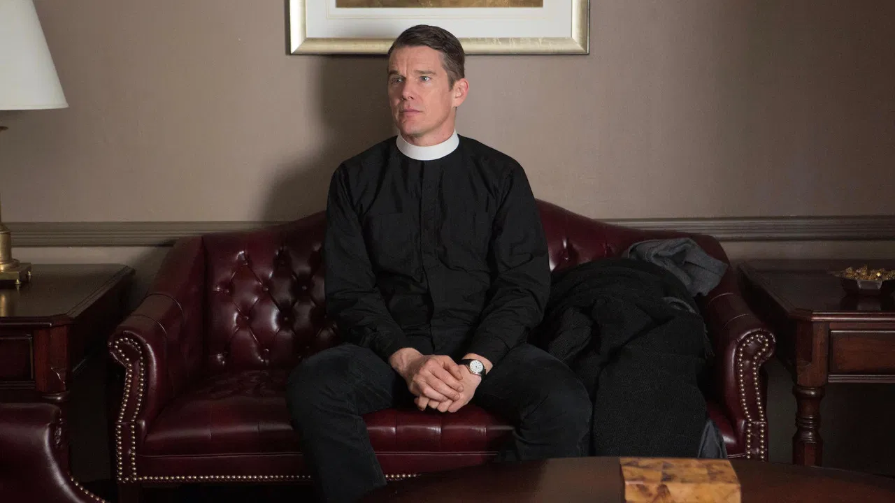
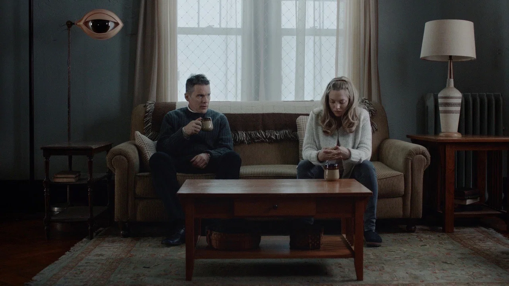
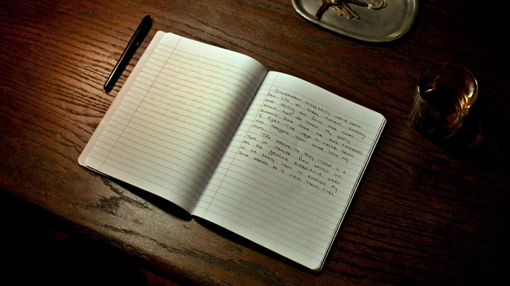
导演与主创 · 他们的历史作品
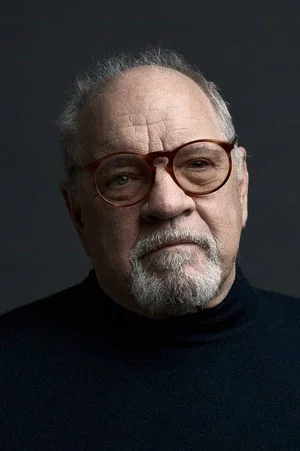
 出租车司机
出租车司机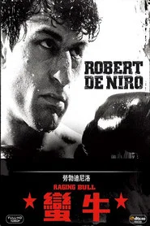
愤怒的公牛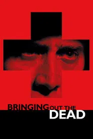
穿梭阴阳界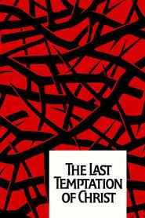
基督最后的诱惑
 人类清除计划
人类清除计划 前目的地
前目的地 千钧一发
千钧一发 险恶
险恶 时间规划局
时间规划局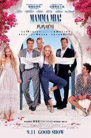
妈妈咪呀短评（轻微剧透）
轻微剧透：全片最安静的一场戏是托勒与玛丽安在教堂里那段长谈——两个人在同一间屋子里，说的却是两种互不相通的语言。轻微剧透：施拉德最狠的一笔，是让托勒的「觉醒」以自毁的方式完成：他不是找到了答案，是终于决定不再假装有答案。结尾那件礼服与那件背心，是近年电影里最刺眼的两个镜头——一件是庆典的体面，一件是献祭的决绝。这不是一部劝人信教的电影，也不是一部嘲笑信仰的电影，它问的是一个更老的问题：当世界正在坏掉，祈祷够不够。
为什么值得一看
想看「剧情片能把张力绷得多紧」的人；能接受节奏极慢、议题沉重、以及它本质上是一部关于「信仰与环境末日」的电影的观众。内地未映，流媒体与蓝光可看。看完想继续：《出租车司机》《美国舞男》（同导演，施拉德最著名的两部）、《第一归正会》的剧本（施拉德本人公开过）。
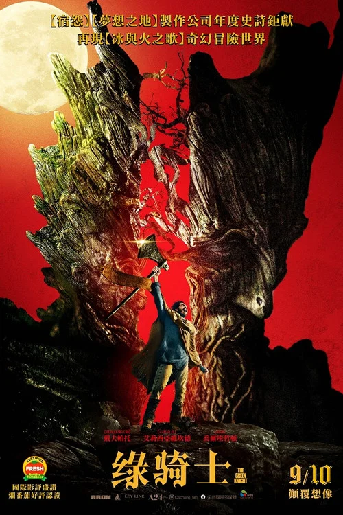
绿衣骑士 The Green Knight
「「我许诺过，我就会来。」」
剧情梗概
圆桌骑士的圣诞夜，亚瑟王的宫殿里走进来一位绿色的骑士：他提出一个游戏——谁愿意朝他挥一剑，来年圣诞在同一座绿色小教堂，领受同样的一击。没有人敢。侄子高文喝多了，站了起来。一年之后，他带着母亲给的护身符和一副不怎么管用的盔甲上路了：遇狐狸、遇巨人、遇强盗、遇幽灵、遇一群修女，最后走进了那座绿色小教堂。而等待他的那一斧，比他想象的更接近「荣誉」的真相——也更接近他自己。
亮点
- 改编自 14 世纪的古英语叙事诗《高文与绿衣骑士》——与《贝奥武甫》并列的英国文学最古老文本之一。
- 大卫·洛维执导、编剧——继《鬼魅浮生》之后，他把一部中世纪骑士诗拍成了关于「男性荣誉」的心理寓言。
- 影片的美术、摄影与配乐（丹尼尔·哈特）在 2021 年的圣丹斯与各站影评人奖上横扫技术奖项——它看起来像一幅会动的挂毯。
- 烂番茄 89% / Metacritic 85，而豆瓣只有 6.5——本期「专业评价与大众评分落差最大」的一部，也是 A24 最分裂的作品之一。
- 戴夫·帕特尔演的高文几乎没有台词，全片靠「走路、犹豫、回头」完成表演。
- 影片里那只陪高文走完全程的狐狸，是全片唯一一个不评判他的角色——它只是陪着。
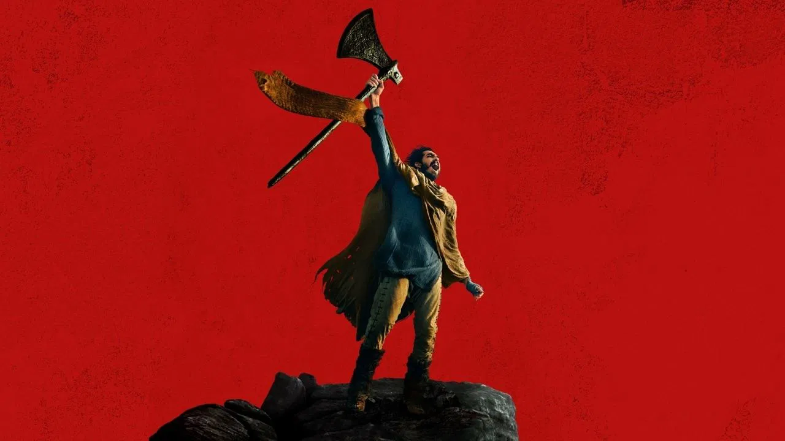
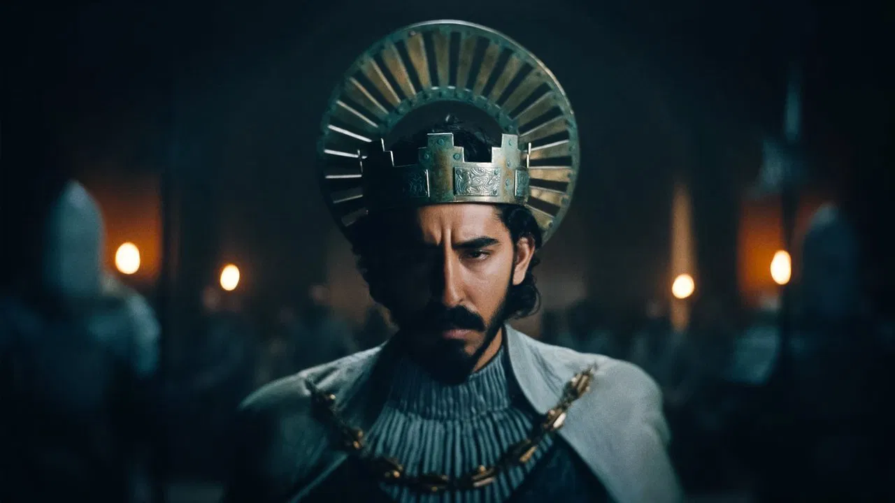
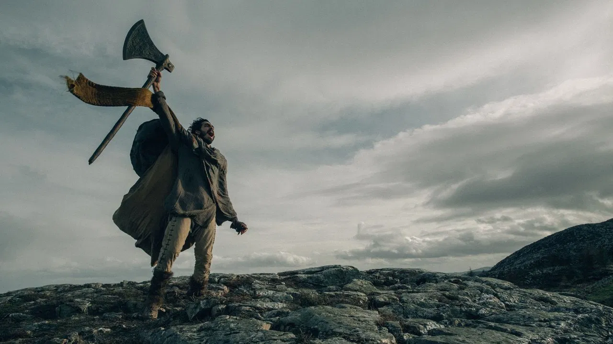
导演与主创 · 他们的历史作品
 鬼魅浮生老人和枪
鬼魅浮生老人和枪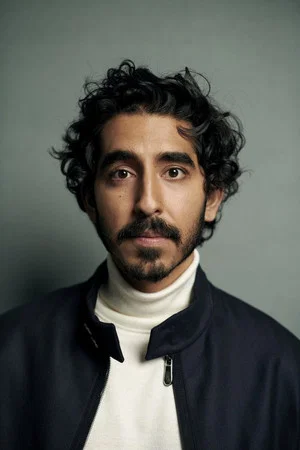
 贫民窟的百万富翁雄狮
贫民窟的百万富翁雄狮 超能查派
超能查派
 古墓丽影：源起之战
古墓丽影：源起之战 机械姬
机械姬 丹麦女孩
丹麦女孩 秘密特工
秘密特工短评（轻微剧透）
轻微剧透：全片最重要的一场戏不是结尾的斩首，是中段高文在圣温妮芙蕾德的修道院里被收下的那个「绿腰带」——他收下的不是护身符，是一个谎言。轻微剧透：洛维最狠的设计，是让「荣誉」这个词从头到尾只从别人嘴里说出来，而高文每一次用它，都是在为自己开脱。结尾他转身逃走的那一瞬间，影片的问题才真正落地：一个男孩要长到多大，才敢承认自己其实不想死。这不是一部给孩子的奇幻片，是一部拍给所有当过男孩的男人的电影。
为什么值得一看
想看「奇幻片能拍得多文学、多暧昧」的人；能接受节奏缓慢、象征密集、以及它本质上是一部关于「成长与怯懦」的电影的观众。R 级，建议成年观看。内地未映，流媒体与蓝光可看。看完想继续：《高文与绿衣骑士》中译本、《鬼魅浮生》（本期第 3 部，同导演）、《圣鹿之死》（同导演，更冷的一部）。
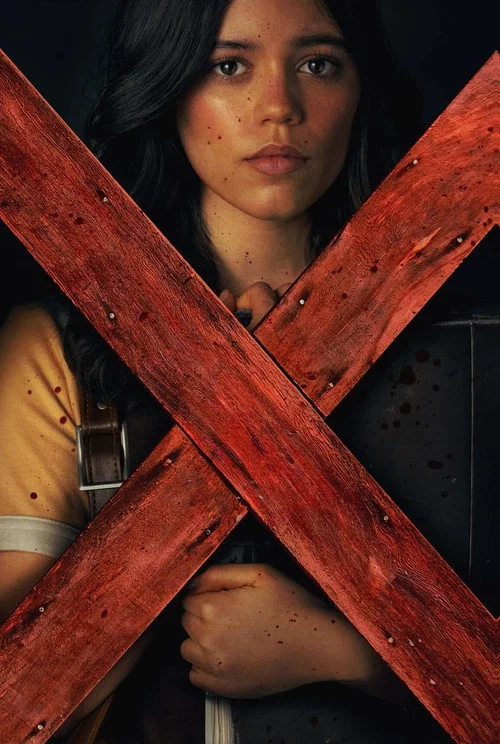
X X
「「她不是怪物——她只是一个不被允许老去的女人。」」
剧情梗概
1979 年，得州乡下。一支三人成人片剧组租下一栋偏僻房子旁边的谷仓，打算拍一部「不一样」的片子。房东是一对老夫妻：丈夫霍华德几乎不说话，妻子珍珠热情得过头——她给姑娘们端茶、夸她们漂亮、讲自己年轻时差一点就成了电影明星。夜里，剧组开始拍片，而珍珠开始提刀出门。天亮之前，这栋房子里会多几具尸体，和一个终于被满足的幻想。
亮点
- 缇·威斯特执导、编剧——他用一部 1979 年质感的砍杀片，讲了一个关于「被剥夺的可能人生」的故事。
- 影片前半段几乎在「致敬」1970 年代得州乡村剥削片：颗粒、变焦、慢摇——后半段突然变成一部真正的恐怖片。
- 烂番茄 94% / Metacritic 80：2022 年专业评价最好的恐怖片之一。
- 米娅·高斯在片中演两个角色（少女麦丝与老妇珍珠）——「一个年轻的欲望，一个老去的欲望」，是全片成立的核心。
- 本片与 2022 年的前传《珀尔》（往期第 11 期推荐过）是背靠背拍摄的，两部片在同一个小镇上用了同一批演员。
- 詹娜·奥尔特加（后来《星期三》的主角）在片里演一个只想把片子拍完的助理——她是全片唯一一个「还想着电影」的人。
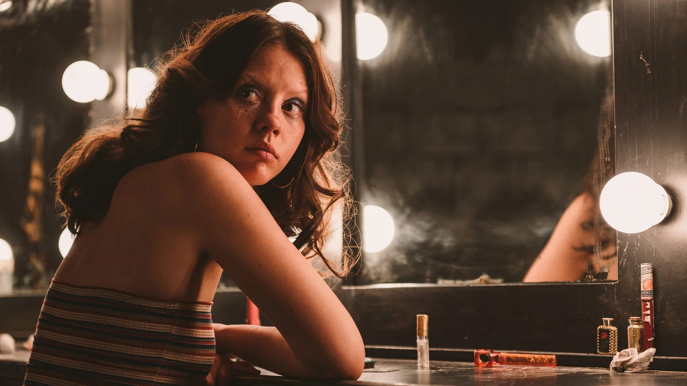
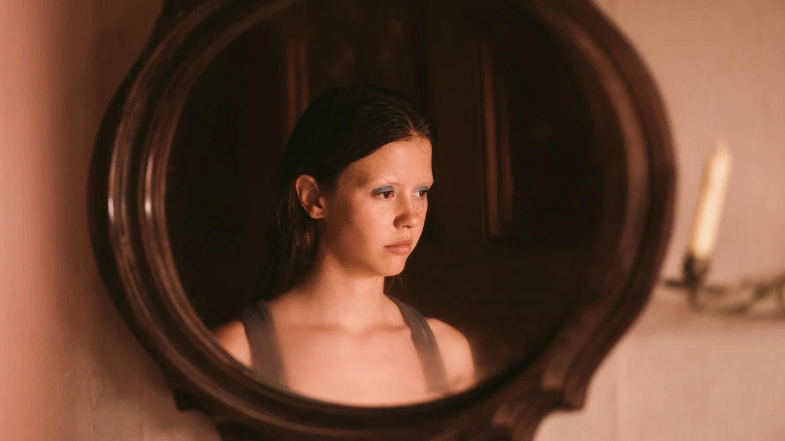
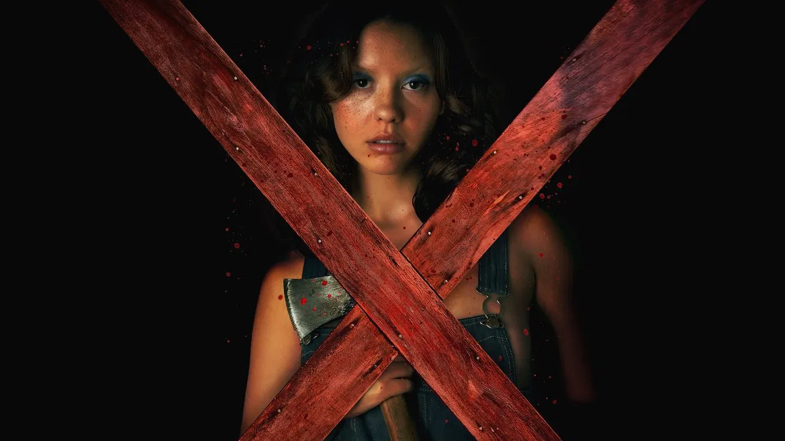
导演与主创 · 他们的历史作品

 珀尔
珀尔 致命录像带
致命录像带 玛克辛
玛克辛 邪恶之屋
邪恶之屋 珀尔玛克辛
珀尔玛克辛 救命解药
救命解药 房子
房子 惊声尖叫5
惊声尖叫5 惊声尖叫6
惊声尖叫6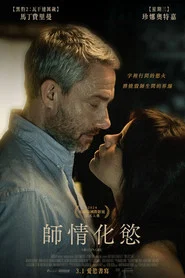
米勒的女孩短评（轻微剧透）
轻微剧透：全片最让人不适的一场戏不是屠杀，是珍珠在湖边对麦丝说的那段话——她讲自己年轻时怎么跳舞、怎么被拦下、怎么留在了这座农场。轻微剧透：影片的残酷之处在于，它让观众在珍珠举刀之前就已经理解了她：她杀的不是年轻人，是自己没能过上的那种人生。结尾她坐在湖边问「我很厉害吗」，是近年恐怖片里最让人心里一空的台词。这不是一部纯粹的杀戮片，是一部把「衰老」拍成恐怖片的电影。
为什么值得一看
想看「恐怖片能把同情心放在哪一边」的人；能接受剥削片质感、血浆直给、以及它本质上是一部关于「欲望与时代」的电影的观众。R 级，建议成年观看。内地未映，流媒体与蓝光可看。看完想继续：《珀尔》（往期第 11 期推荐过，三部曲第二部）、《玛克辛》（本期第 10 部，三部曲收官）、《 X 》的幕后纪录（A24 出过一支，值得看）。
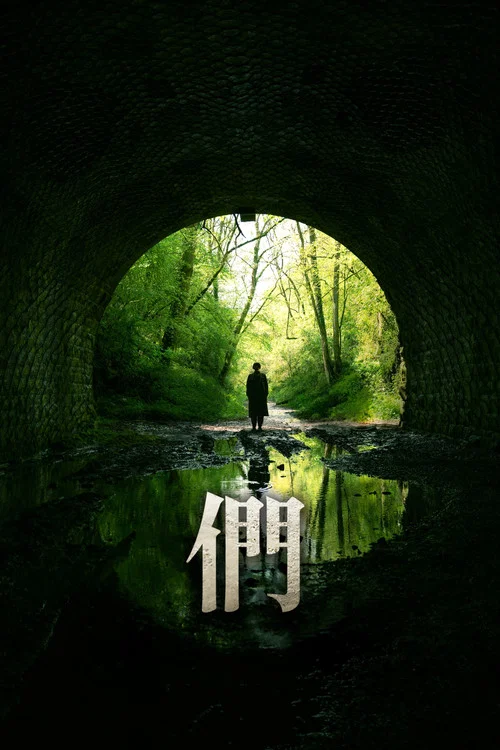
男人 Men
「「这里的每一个男人，都长得一模一样。」」
剧情梗概
哈珀的丈夫詹姆斯在他们家的花园里自杀了，她一个人去了英国乡下的一栋老房子，想清静两周。可她没躲开任何东西：村里那个一脸审讯犯人的房东、赤身闯进花园的少年、教堂里面无表情的牧师、酒吧里说她丈夫「其实很脆弱」的学生——还有树林里那个一路跟着她的影子。她的月经来了；她在浴缸里、在走廊里、在教堂里，一次次撞见同一个男人。而影片的第三十分钟之后，事情朝着一个无法用「闹鬼」解释的方向去了。
亮点
- 亚历克斯·加兰执导、编剧——《机械姬》《湮灭》《惊变28天》的作者，本片是他最「神话学」的一部。
- 影片的内核是「煤气灯效应」的神话化：哈珀经历的不是鬼，是一整套把她的感受判定为「疯了」的男性系统。
- 罗里·金尼尔一人分饰七角：房东、牧师、学生、警察、流浪汉、赤身少年，以及最后那个「东西」——同一张脸，七种不同的「不容置疑」。
- 杰茜·巴克利几乎独自撑起全片——她演的哈珀是全片唯一一个「被允许有反应」的人。
- 本期口碑最低的一部：烂番茄 69% / Metacritic 65 / IMDb 6.0——影评人分裂，观众更分裂。
- 影片的第三幕把「男性气质」拍成了一场身体的悲剧——它宁愿放弃逻辑，也要把隐喻推到底。
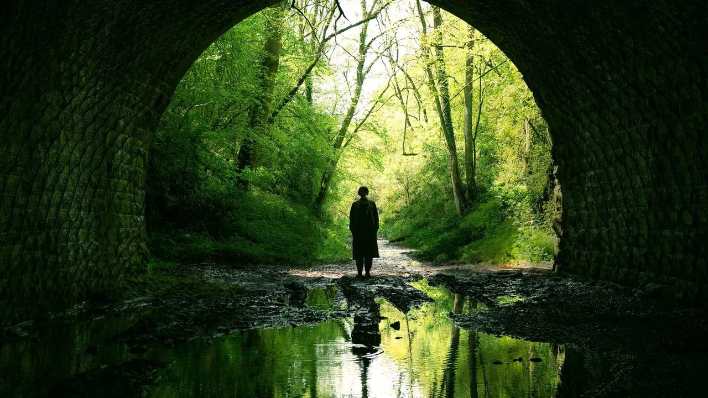
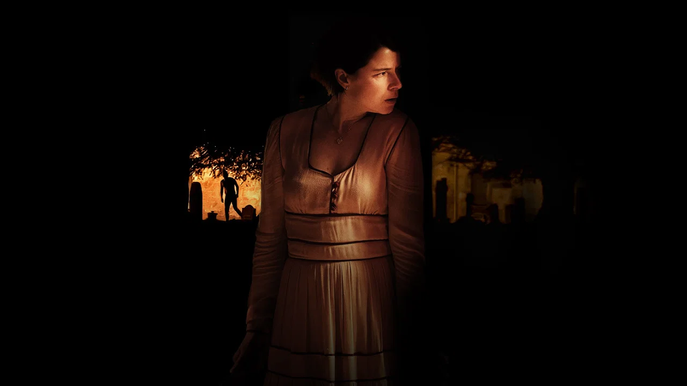
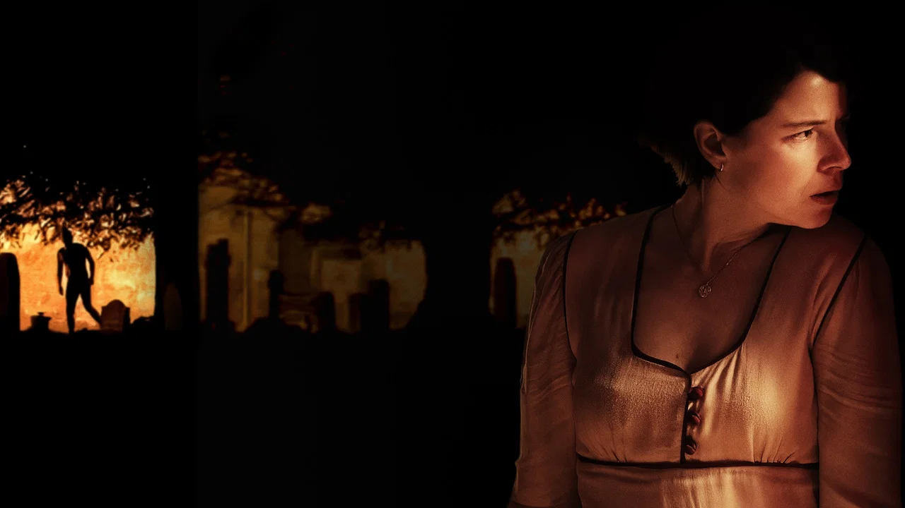
导演与主创 · 他们的历史作品
 机械姬
机械姬 湮灭
湮灭 惊变28天
惊变28天 特警判官
特警判官 哈姆奈特
哈姆奈特 我想结束这一切
我想结束这一切 模仿游戏
模仿游戏 007：大破天幕杀机007：幽灵党007：无暇赴死
007：大破天幕杀机007：幽灵党007：无暇赴死短评（轻微剧透）
轻微剧透：全片最窒息的一场戏是酒吧里那两个学生当着哈珀的面讨论她丈夫的「脆弱」——他们甚至不认为自己在说一件残忍的事。轻微剧透：加兰的设计很明白：每一个「男人」都不是个体，是同一种声音的七次播放。而影片最后那场戏之所以争议巨大，正是因为它把这个隐喻从「说法」变成了「生理」——有人觉得这是天才的一笔，有人觉得这是崩掉的一笔。但即使你讨厌它，也很难忘记它。这不是一部能让人舒服看完的恐怖片，它就没打算让人舒服。
为什么值得一看
想看「恐怖片能把隐喻推多远」的人；能接受极度不适、身体恐怖、以及它本质上是一部关于「女性的经验是否被允许成立」的电影的观众。R 级，建议成年观看。内地未映，流媒体与蓝光可看。看完想继续：《机械姬》（往期第 13 期推荐过，同导演）、《湮灭》（往期第 40 期推荐过，同导演）、《仲夏夜惊魂》（往期第 30 期推荐过的另一种关系惊悚）。
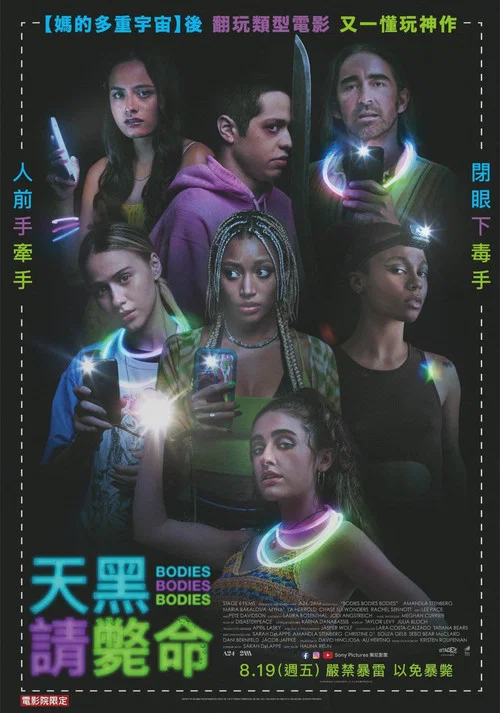
尸体游戏 Bodies Bodies Bodies
「「飓风夜、一栋豪宅、七个朋友、一个游戏——和一具尸体。」」
剧情梗概
一场飓风逼近纽约长岛。七个二十多岁的朋友聚在苏菲家的豪宅里，断电、断网、谁也出不去。有人提议玩「尸体游戏」——一种派对版的狼人杀：抽牌，一个人抽到「X」是杀手，其他人抽到「受害者」，杀手在黑暗中拍人的肩膀，被拍的人「倒下」，剩下的人要找出杀手。第一轮还没结束，就真的有人死了。而接下来要命的不是尸体——是他们各自的手机、秘密、和谁也说不清的动机。
亮点
- 哈里纳·雷金执导——本片是这位荷兰演员转行导演的英语长片处女作（她演过保罗·范霍文的《黑皮书》）。
- 影片的「游戏机制」是全片最好笑也最冷的地方：它一边嘲笑这群人的表演欲，一边让观众意识到——他们真的在互相定罪。
- 烂番茄 85% / Metacritic 69，而豆瓣只有 4.7 / IMDb 6.1——本期口碑落差最大的一部：海外影评人爱它的「社交媒体世代讽刺」，国内观众多嫌它「吵、作、无聊」。
- 瑞秋·塞诺特演的艾丽斯是全片「最真实也最先失控」的人——她与《垫底俱乐部》一起，成了 2022 年最被看好的新人面孔。
- 玛丽亚·巴卡洛娃（《波拉特2》成名）演的比，是全片唯一一个想「解决问题」的人——也是唯一一个不玩的人。
- 影片几乎全程发生在断电的豪宅里，靠手电、手机光与窗外的闪电打光——一部用「黑暗」讲「网红」的电影。
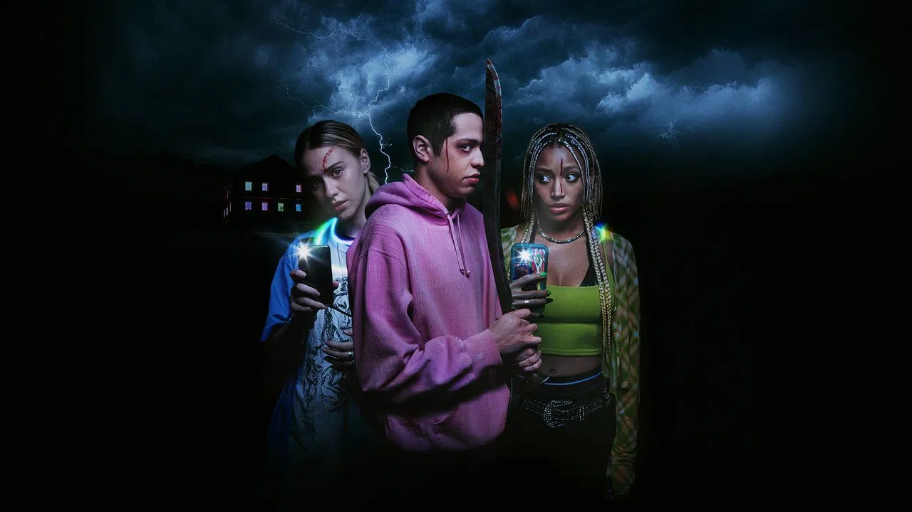
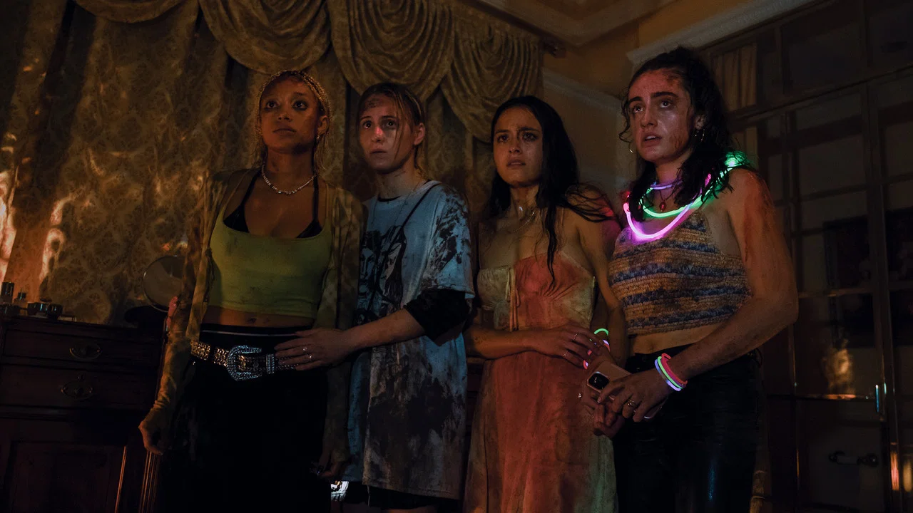
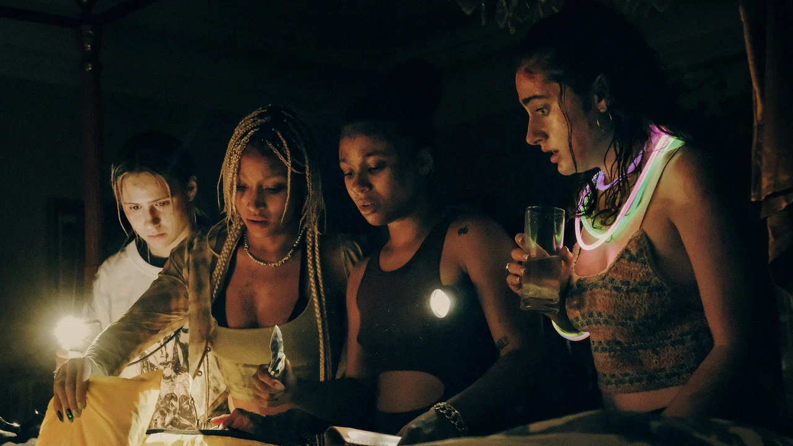
导演与主创 · 他们的历史作品
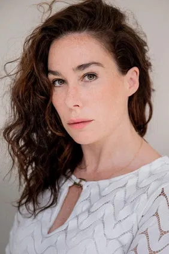
 小心肝儿
小心肝儿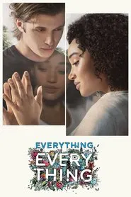
爱即一切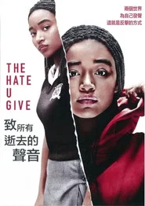
你给的仇恨 饥饿游戏
饥饿游戏 波拉特2
波拉特2 银河护卫队3
银河护卫队3 飞黄腾达
飞黄腾达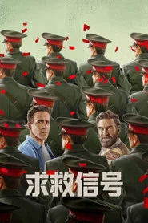
求救信号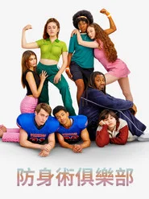
垫底俱乐部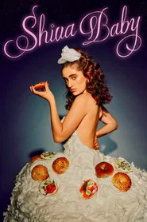
丧日少女 周六夜时光
周六夜时光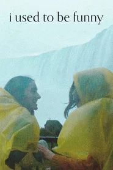
我以前很有趣短评（轻微剧透）
轻微剧透：全片最讽刺的一场戏，是他们一边报警一边互相提醒「别把刚才那句话发出去」。轻微剧透：雷金的聪明之处，是把「谁是凶手」拍成了一个次要问题——真正让这群人互相撕开的，是谁的手机里有什么、谁在群里被踢出去过、谁说了谁的闲话。影片的恐怖不来自尸体，来自「每个人都在表演自己是个好人」这件事本身。看完你会明白片名为什么叫「尸体游戏」：在这个房间里，活人也只是在玩游戏。
为什么值得一看
想看「恐怖片能把社交媒体时代的相处方式写得多准」的人；能接受吵闹、刻薄、以及它本质上是一部「群像讽刺喜剧」的观众。R 级，建议成年观看。内地未映，流媒体可看。看完想继续：《垫底俱乐部》（同主演，更青春的一部）、《博很恐惧》（A24 另一部让人不适的片）、《闪灵》的派对段落（同类密闭空间暴政）。
过往人生 Past Lives
「「我们不是错过，我们只是走了两条不同的河。」」
剧情梗概
首尔，十二岁。娜英和东华青梅竹马，两家母亲是好友，两个孩子一起长大、一起放学、一起在河边走。然后在娜英一家移民加拿大的那天，他们分开了。十二年过去，娜英（现在叫诺拉）成了纽约的年轻剧作家，东华来纽约找她，两个人坐在咖啡馆里聊了一整夜。又十二年过去，诺拉嫁给了亚瑟，住在纽约；东华来纽约出差——这一次，他们中间隔着一整段「没有彼此的人生」。
亮点
- 席琳·宋执导、编剧——这是她的长片处女作，也是 2023 年评价最高的爱情片。
- 第 96 届奥斯卡提名：最佳影片、最佳原创剧本——A24 第一部入围奥斯卡最佳影片的电影。
- Metacritic 94 / 烂番茄 95%：本期专业评价最高的一部，也是 2023 年评分最高的美国电影之一。
- 全片只有三个主要角色，却讲了两个国家、两种语言、二十四年的错过——它把一个「韩裔移民」的故事拍成了所有人的故事。
- 影片在纽约与首尔两地实拍，两座城市的雨是全片的隐形主角。
- 最后一镜没有台词：诺拉和亚瑟坐在车里等红灯，诺拉看着窗外——那一镜里装着整部电影的分量。
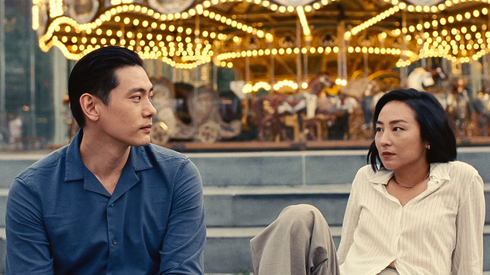
导演与主创 · 他们的历史作品
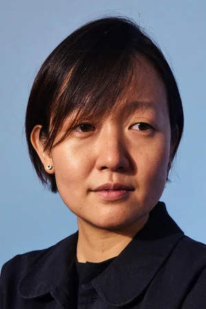

 蜘蛛侠：平行宇宙
蜘蛛侠：平行宇宙 创：战神
创：战神 蜘蛛侠：纵横宇宙
蜘蛛侠：纵横宇宙 分手的决心
分手的决心短评（轻微剧透）
轻微剧透：全片最关键的一场戏不是重逢，是三个人从酒吧出来后的那段散步——诺拉在中间，两个男人在两边，她翻译着他们彼此听不懂的话。轻微剧透：席琳·宋最克制的地方，是她从头到尾没有让任何一个角色「做错事」：东华没有纠缠，诺拉没有背叛，亚瑟没有嫉妒到失态。影片的痛感全部来自「时间」本身——它不是一部关于「选谁」的电影，是一部关于「你是谁，是你选过的所有人加起来」的电影。看完那个结尾，你会明白为什么它叫《过往人生》：那些年没有浪费，它们只是没有再回来。
为什么值得一看
想看「爱情片能拍得多安静、多准确」的人；能接受对话驱动、几乎没有戏剧转折、以及它本质上是一部关于「移民与身份」的电影的观众。PG-13，可放心观看。内地未映，流媒体可看。看完想继续：《物质主义者》（同导演，同宇宙的另一部）、《爱在黎明破晓前》三部曲式的长聊片、《纽约的一个雨天》（伍迪·艾伦，另一种「错过」）。
玛克辛 MaXXXine
「「我在 X 里活了下来，在珀尔里杀了人——现在，好莱坞归我。」」
剧情梗概
1985 年，洛杉矶，「夜行者」连环杀人的阴影下。麦丝·明克斯在那场得州农场的屠杀里活了下来，如今她改头换面，只想当一个电影明星。她得到一个试镜机会：一部叫《清教徒2》的恐怖片续集，导演是个自命不凡的英国女人，剧组里没人知道她的过去。可有人不让她翻身：一个戴皮手套的夜行者，正把日落大道一条街一条街地杀过去，所有线索都指向她拼命想忘掉的那个姓——她父亲的姓。
亮点
- 缇·威斯特执导、编剧——「X 三部曲」的收官之作（《X》→《珀尔》→《玛克辛》），米娅·高斯第三次演麦丝。
- 影片的类型在恐怖片与好莱坞产业寓言之间反复切换：它一边杀人，一边讲「一个女演员在 1985 年的洛杉矶要付出什么」。
- 预算不到 1000 万美元，全球约 2210 万美元——三部曲里票房最高的一部。
- 烂番茄 73% / Metacritic 64 / 豆瓣 6.2：三部曲里评价最低的一部，但仍然是 2024 年最受讨论的 A24 电影。
- 伊丽莎白·德比齐演《清教徒2》的导演，凯文·贝肯演替人跑腿的私家侦探——影片请来的「正经演员」，本身就是它对好莱坞的评论。
- 片中的《清教徒2》是一部假电影，但影片真的给它拍了预告片、首映礼与采访间——所有关于「续集工业」的笑话都是真的。
导演与主创 · 他们的历史作品
 X珀尔致命录像带邪恶之屋
X珀尔救命解药房子
X珀尔致命录像带邪恶之屋
X珀尔救命解药房子 信条
信条 了不起的盖茨比
了不起的盖茨比 银河护卫队2秘密特工
银河护卫队2秘密特工
 沉睡者
沉睡者 透明人
透明人 X战警：第一战
X战警：第一战短评（轻微剧透）
轻微剧透：全片最讽刺的一场戏，是麦丝在片场被人指着鼻子骂「你只是个成人片演员」，而她的回答是继续背台词。轻微剧透：威斯特的设定很明白：这一部的怪物不是父亲，是「行业」——父亲要的是她的灵魂，行业要的是她的脸，而麦丝两个都卖。结尾她在直升机探照灯下开枪，然后走进自己设想中的首映礼：她把父亲那一枪剪成了自己的成名素材。三部曲连看是一次完整的体验：《珀尔》讲她怎么变成怪物，《X》讲她怎么杀人，《玛克辛》讲她怎么红。
为什么值得一看
想看「恐怖片能把类型与产业讽刺缝在一起」的人；能接受血浆、剥削片趣味、以及它本质上是一部关于「成名代价」的电影的观众。R 级，建议成年观看。内地未映，流媒体与蓝光可看。看完想继续：三部曲连看（本期第 6 部《X》+ 往期第 11 期《珀尔》）、《兰开斯特之王》式的产业寓言、《一个明星的诞生》的另一版结局。